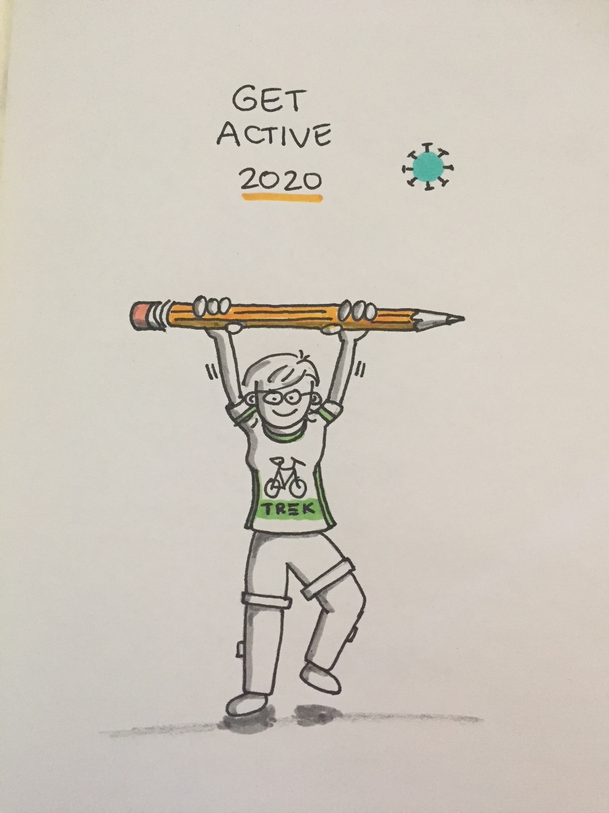
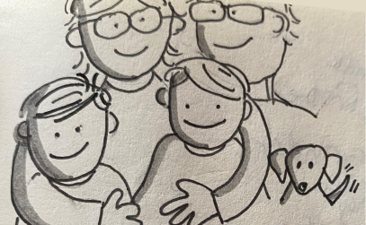

About me
Hello! I'm Marnie...
I am a user experience (UX) advisor with over 25 years of experience creating, managing, and leading web design, strategy, and front-end development.
- My greatest strength is creative problem-solving.
- I have a talent for seeing possibilities and challenging the status quo.
- I am passionate about making technology easier for people to use.
- I value figuring things out and getting things done.
- I am known for combining technology and design to help people get the information they need. I spent the early years of my career helping people get onto the Internet and the last 20 years helping people get health information.
I have worked with notable clients including various Alberta Health Services teams, Alberta Health, Health Link Alberta, Inform Alberta, OpenText, Microsoft, TELUS, and Disney.

I love camping, hiking, being outside, cross-country skiing, cycling, and music. I enjoy drawing, doodling, and journaling.
I especially love spending time with my family, including my husband, twins sons, and dachshunds.